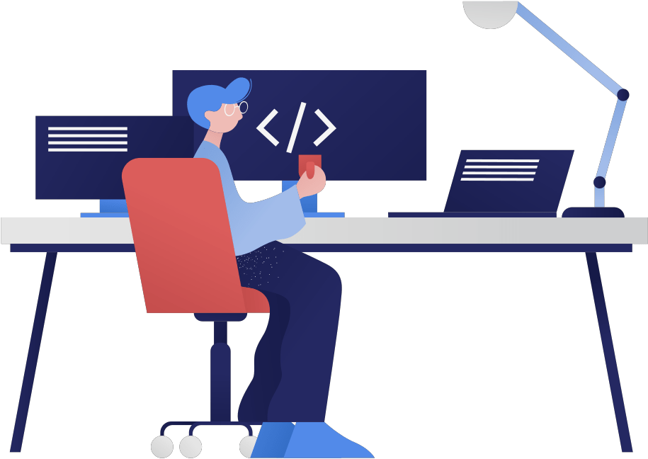
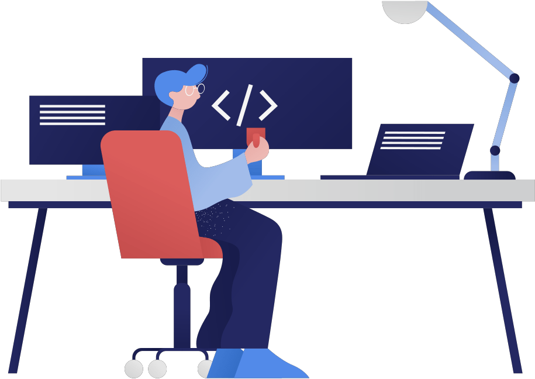
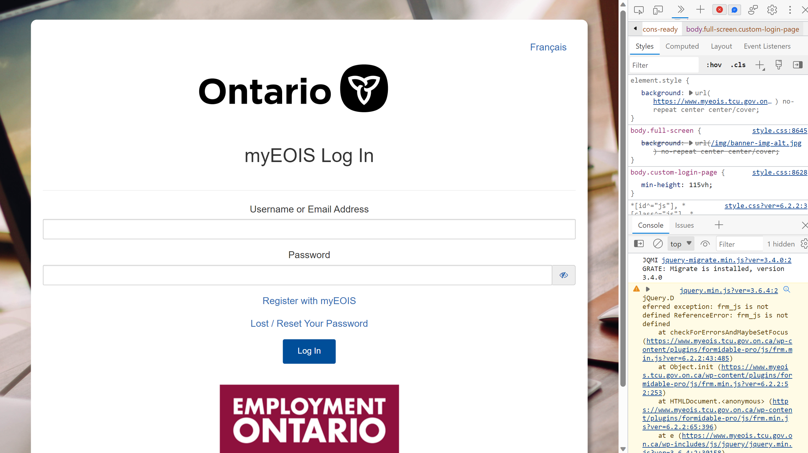

Ontario Ministry of Transportation
IT Project Assistant
1. MyEOIS Website Enhancement
During my summer internship as an IT Project Assistant, I played a role in managing and enhancing the Employment Ontario Information System (MyEOIS) government website, which is responsible for supporting the administration of Employment Ontario programs and services.
I actively engaged with the existing codebase, closely observing and analyzing the PHP and JavaScript code. This not only expanded my technical knowledge but also provided me with fresh perspectives on efficient coding practices.


One of my key responsibilities was to identify and resolve errors or bugs within the website. Additionally, I undertook the task of developing new functionalities, such as the "Add more files" and "Select Agents" features, integrating them into the existing codebase. This hands-on experience enabled me to fine-tune my coding skills while contributing to the site's overall usability.
One of the distinctive aspects of my role was my involvement in meetings, where I reported on the issues I had resolved. These meetings occurred twice a week, providing an opportunity for me to communicate my progress to the team effectively and ensure transparency in the development process. This reporting process taught me a sense of teamwork and effective communication skills in the workplace.
After reviewing, I transferred support tickets to other agents for review, ensuring that each issue was thoroughly examined and fully resolved. This collaborative approach to ticket management allowed for an efficient resolution process. Initially, I perceived this method as being less efficient and rather slow. however, I subsequently came to realize that precision holds greater significance than speed within governmental contexts.
One notable challenge I encountered during this process was the initial difficulty in understanding the overall workflow, such as working within a local environment and pushing changes to the staging environment. Moreover, I encountered numerous new terminologies in the workspace that I had not encountered in my educational background.
To overcome this challenge, I proactively sought assistance from my senior colleagues and peers. I was not afraid to ask for help and actively engaged in researching and learning the intricacies of programming within the workplace. This commitment allowed me to further develop my communication and technical skills, ultimately contributing to the success of the MyEOIS website project.